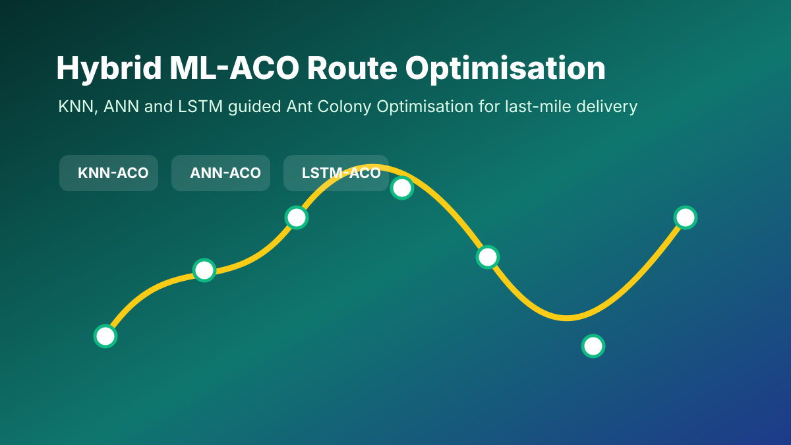

MSc Practicum Project
Hybrid ML-ACO Route Optimisation for Last-Mile Delivery
A research project combining Ant Colony Optimisation with machine learning guidance models to improve vehicle routing decisions for last-mile delivery networks.

PDF REPORT
Practicum_24123684_Final.pdf
Report Preview
Click the report card or buttons to open the uploaded PDF exactly as it is stored in the projects folder.
View Full ReportSummary
This project compares KNN-ACO, ANN-ACO and LSTM-ACO for last-mile delivery route optimisation.